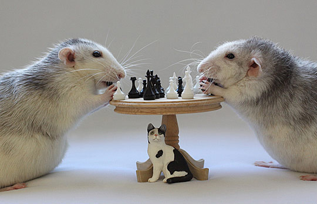

《下棋感受》
#1 《下棋感受》 作者：蓝天蓝 发表时间：2011-12-5 15:05:15
《下棋感受》
原作者:肥硕大猫 发表在QQ空间

下棋速度。
我觉得一个下棋快不快的人可体现出其思维敏捷、聪笨与否。
走棋快的人有两种：一种是理论基础扎实、实战经验丰富，知道自己走的每一步棋准确的落点放在哪里。那训练有素的特质令他的棋固若金汤，你很难找出他的破绽去攻他。
另一种人是直觉敏锐。他可能经验不足，也没去研究什么棋谱、理论之类，但他有好的直觉或计算力，令他的棋偏差不会太离谱。
我觉得不可理喻的是那些下棋很慢却还是输给对手的人。
走棋慢，证明思维不灵活、不敏捷，不属于头脑聪明的一类。（我曾说过，检验一个人是否聪明，最好就是通过下棋去验）。
也许有人会说，人家是深思熟虑，哪像你急匆匆的不思考能下好棋么？
但我不这么认为，我的看法是，一个人脑袋聪敏的话，他不需要花很多的时间（当然，说到特殊情况比如有遇到高级棋手下的盘面复杂的棋要算很久的就另当别论）。而脑袋本身不灵，你就是“深思熟虑”十小时，也想不过人家。比如，和高手下棋，人家几分钟内就算出十几二十步的棋了，你却坐在那想了三小时还不知道轮到自己走的那步棋怎么走。到最后，你花的时间比别人长，可还是输给了别人，所以，下棋是花时间长短去思考就能定胜负的吗？不是的。我小学时有次考试，会做的同学一看试卷就开始着手落笔去写了。有位监考老师对那些托腮咬笔呆坐着的学生说，懂就是懂，不懂的你坐一整天也什么都想不出来。
QQ游戏里下棋时间是有限制的，容不得你想得时间长得太离谱，紧迫着你快速思考，可锻炼自己思维的敏捷性、直觉的敏锐性。我的看法是：宁愿走错后悔棋重走，也不要浪费时间去想了大半天还是想不过对手；宁愿爽脆利落不脱泥带水地输棋，也不因自己耗时间自伤脑筋却竹篮打水一场空。宁愿承认自己脑袋笨技不如人也不要傻对着棋盘乱想一气白费双方的时间。
有位父亲对他读小学二年级的女儿有套教法。如果做作业因粗心出错的，他不会责怪惩罚她，但如果女儿作业做得慢和不会做，他就十分生气。为什么呢？他觉得粗心大意是可以通过行为刻意去矫正的，而做作业慢（包括生活中做别的事慢）和对作业弄不懂不会做，就涉及到思维问题了。他觉得一个人做事磨磨噌噌、粘粘糊糊，就是因为思维不灵活反映到行为上的不敏捷；作业不懂不会做，就是理解能力差（为什么同一老师教，别人懂了你不懂？还不是自己脑袋不行？即使最后做对了也没用，因为代表不了你是个思维敏捷聪明并且能力强的人）而这属于思维范畴的又是先天（天生）的，几乎不可逆转的。虽然不否认可以通过后天的加倍努力去改变，但一来付出的成本相当大，二来进步比较微。
我理解这位父亲，他不能接受自己生下的孩子脑袋笨。广州人有句话叫“宁生败家子，莫生蠢钝儿，”什么意思？就是说，孩子败了家没什么，只要引导教育得当，他有本事败家，同样会有头脑创业创家。可生了个蠢钝不聪明的，那就没救了，教都教不来。所以又有句话说：“人蠢无药医，”头脑智力是先天的，“将勤补拙”这句话是安慰人的。
我其实有着和这位父亲相似的想法。下棋慢，就是思维不灵活，思维不灵活，人就谈不上聪明。所以，我是十分羡慕那些快手快脚、三下五除二就把对手砍了的人，真是开心痛快呀！我多么希望自己成为这样的人啊！虽然我下棋速度不慢，但我是属于走错后宁愿悔棋也不愿死想也想不过对手的那类人，我觉得我不属于聪敏。
下棋下得厉害的人算不算聪明？
我说一个人聪不聪明从下棋下的好不好可以看出来了。人家反驳我了。
有人说，将定式背个滚瓜烂熟去赢人一盘又一盘的棋算不算聪明呢？我不是这意思。
&nb
我说一个人聪不聪明从下棋下的好不好可以看出来了。人家反驳我了。
有人说，将定式背个滚瓜烂熟去赢人一盘又一盘的棋算不算聪明呢？我不是这意思。
&nb